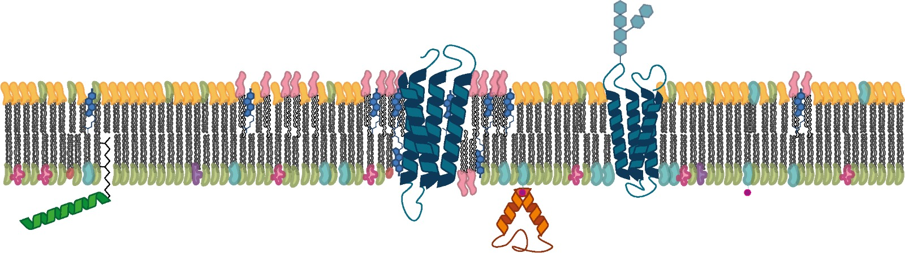

Henry Sawczyc
About me and my research
I am a passionate biochemist, focussing on membrane protein biology. I am currently based in Berlin, but my DPhil at Oxford focussed on using biophysical techniques to understand lipid nanoparticles. I am particulary interested in the formation of these particles and how the lipids in these systems behave. Especially how the initial conditions impact solubilisation efficiency.
Biophysical techniques generate large quantities of data, which often require manual processing. I have used python to develop tools to process and automate the data analysis. Rough examples are avaliable on my GitHub, and I look to convert these into simple tutorials, for those new to python.
Background
DPhil, University of Oxford
(2016 - 2020)
DPhil in Biochemistry, under the supervision of Prof. Anthony Watts and Dr Max Ryadnov at the NPL (National Physics Lab).
MBiol, Durham University
(2012 - 2016)
Masters thesis focussed on the protein dynmaics involved in bacterial gene regulatory systems. Supervised by Dr Ehmke Pohl.